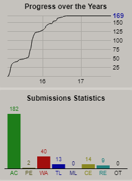

Welcome
-
About Me
Almost 4 years experience in competitive programming and 1 year experience in software development industry. Currently, I have been working as a software engineer at Enosis Solutions and my client is a USA based business intelligence firm provides solutions for Pharma/Biotech Manufacturers. I mainly implement various kind of desktop and web-based application and maintain multiple large-scale databases for those applications.
-
Activities
-
Love to solve Mathematical and Algorithmic problems. I Solved more than 250 Mathematical and Algorithmic problems on various online judge including UVA, SPOJ, and TIMUS. Below is my problem solving statistics from UVA

-
During my free time, I write in my own programming blog.
You can find my programming blog here. Sowkat's Note
- Worked as a programming problem creator in university CSE fest.
-
Love to solve Mathematical and Algorithmic problems. I Solved more than 250 Mathematical and Algorithmic problems on various online judge including UVA, SPOJ, and TIMUS. Below is my problem solving statistics from UVA
Education
AMERICAN INTERNATIONAL UNIVERSITY-BANGLADESH
Bachelor of Science in Computer Science and Engineering
May 2013 - February 2017
Dhaka City College
Higher Secondary Certificate (HSC)
July 2010 - October 2012
Madhabpur Pilot High school
Secondary School Certificate (SSC)
January 2008 - May 2010
Research & Projects
-
A Semantic Approach to Object Detection Algorithm Selection
B.Sc. in Computer Science and Engineering Thesis Work (2016-2017)
Supervisor: Associate Professor Dr. Khandaker Tabin Hasan
Overview: This research focused on the selection of image detection algorithm following the semantic approach. The steps of this research are implementation of the wordnet top level hierarchy, selecting four different algorithms for image detection, Code Implementation and testing. WordNet python API and OpenCv were used for grouping words and running algorithms on images.
-
Finding a suitable classifier from six different classifiers (supervised learning).
B.Sc. in Computer Science and Engineering Project Work, 2016
Supervisor: Assistant Professor Md. Hafizur Rahman
Overview: This project focused on the selection of a suitable classifier from six different classifiers for a dataset. I used machine learning tool Weka for applying Naïve Bayes, Logistic, KNN, Decision Table, Entropy Based Decision Tree (J48), and Multilayer Perceptron classifiers. The main idea was to find the accuracy and confusion matrix of those classifiers for that dataset. Then I used ROC graph to plot those value and select the suitable classifier.
-
Location Based restaurant finder and Rating System
B.Sc. in Computer Science and Engineering Project Work, 2016
Supervisor: Assistant Professor MOHAMMAD SAMAWAT ULLAH
Overview: A system, where user can search restaurant by location in return they can see those restaurant list. By selecting any restaurant they can see individual restaurant page, menu, google map location, and offer and can rate that restaurant. This site has three different kind of user. Multilevel Protection and transaction were created. Location based search works for nearby places too. There is an admin who can review all users.
-
Smart Profile Manager
B.Sc. in Computer Science and Engineering Project Work, 2016
Supervisor: Assistant Professor Md. Hafizur Rahman
Overview: A system with started service where user mobile profile will be changed based on sensor value. There are three profiles home, pocket and silent. By getting sensor value those profile changes. Here three sensors were used proximity sensor, accelerometer sensor and light sensor.
-
Snake and ladder game
B.Sc. in Computer Science and Engineering Project Work, 2016
Supervisor: Lecturer MD. Hasibul Hasan
Overview: Used OpenGL, C++ for making the project where two users can play with each other. Various graphics effect and ladder board was designed to give the actual feel of playing snake and ladder game.
-
Suggesting a healthy diet containing balanced nutrient value for breakfast.
B.Sc. in Computer Science and Engineering Project Work, 2016
Supervisor: Assistant Professor Md. Hafizur Rahman
Overview: This project focused on the suggestion of a healthy diet containing balanced nutrient value for breakfast. The data set contained nutritional information for 77 different breakfast cereals. After analyzing this data set there was a clear concept about different nutrition that belongs to different cereals. And there were some parameters which helped to distinguish that which food to take and which food to avoid for a particular health condition. I used machine learning tool weka for Hierarchical Cluster Analysis, Data Visualization, and Co-Relation.
Programming Problems
Experience
-
-
Research
I worked with Dr. Khandaker Tabin Hasan for nine months. Our research focused on the selection of image detection algorithm following the semantic approach. The steps of this research are implementation of the wordnet top level hierarchy, selecting four different algorithms for image detection, Code Implementation and testing. WordNet python API and OpenCv were used for grouping words and running algorithms on images.
-
-
-
Enosis Solutions
Software Engineer (Sep, 2016- Present)
- Working with small team of developers to brainstorm and implement ideas for software representing leading-edge concept.
- Maintain source control and keep track of issues on issue tracker
- Design the application structure based on requirements.
- Write proper documentation for running the app and further development
- Maintain communication with client with regular meeting over online medium
-
Awards
Contact
|
sowkat.alam.aiub(at)gmail.com |
|
| +8801620853872 | |
|
Sowkat Alam
Middle Badda, Gulshan Badda, Dhaka-1212, Bangladesh |